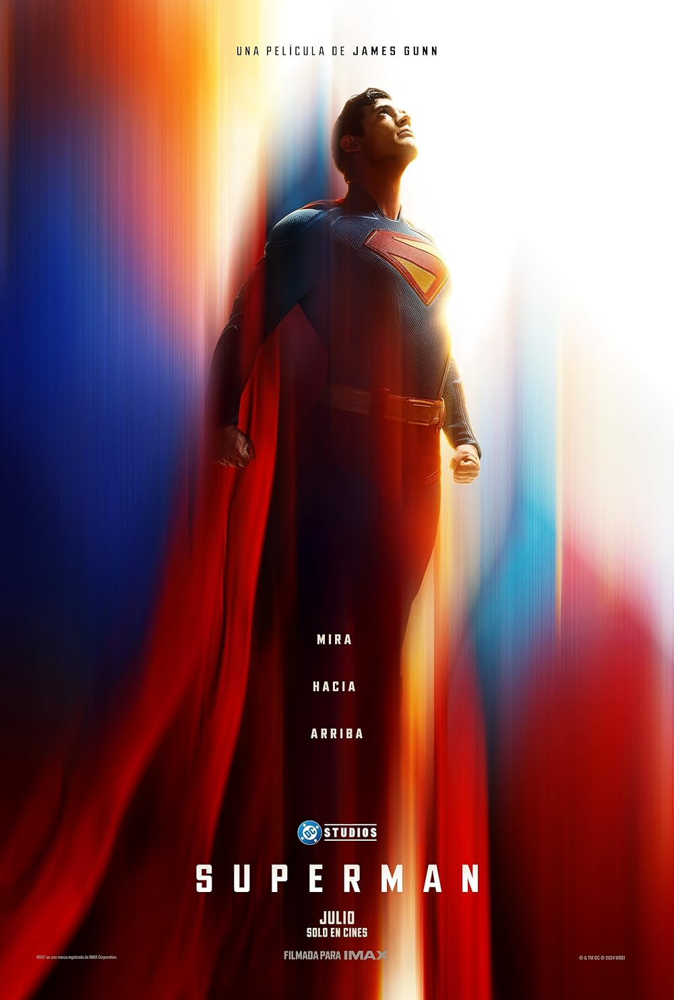
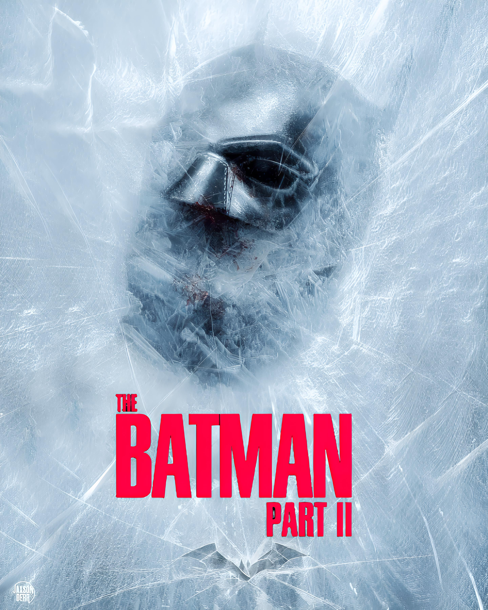
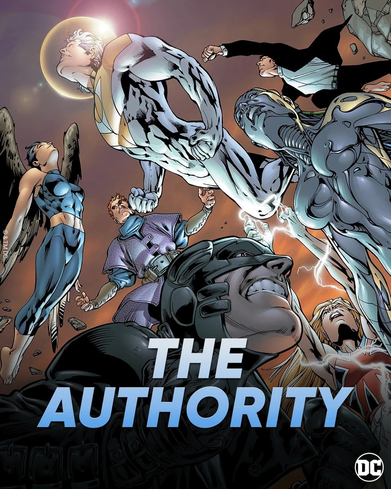
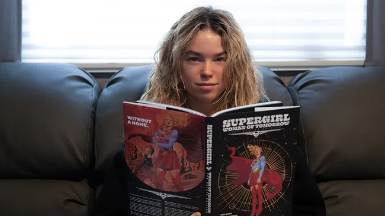
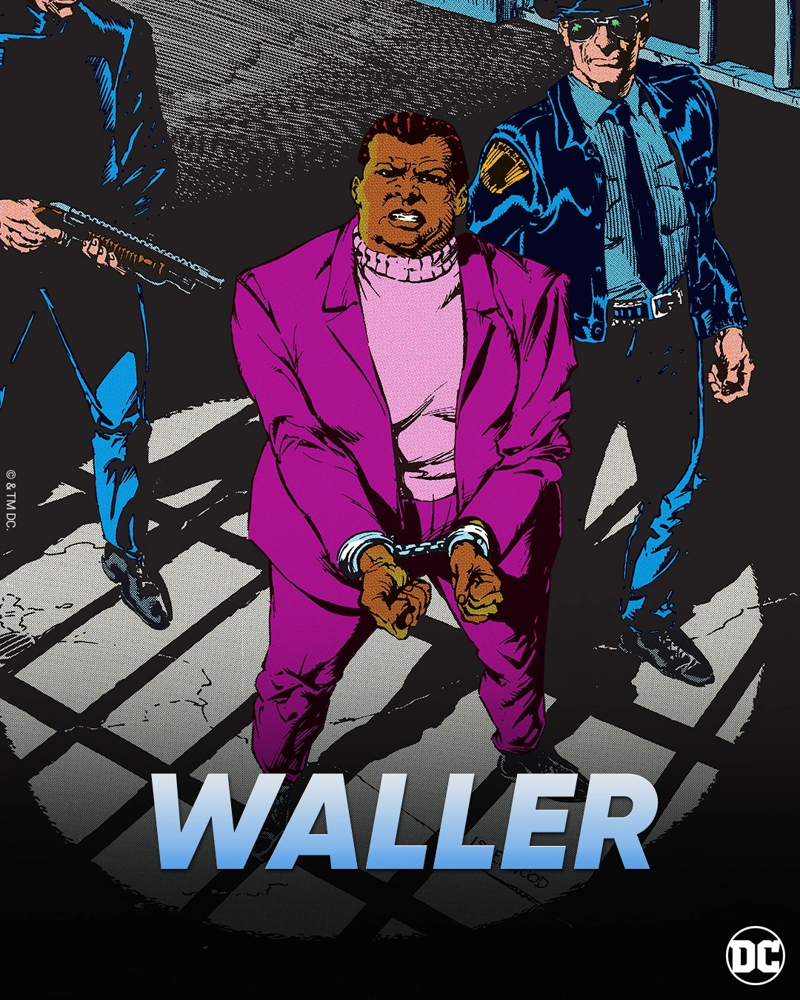
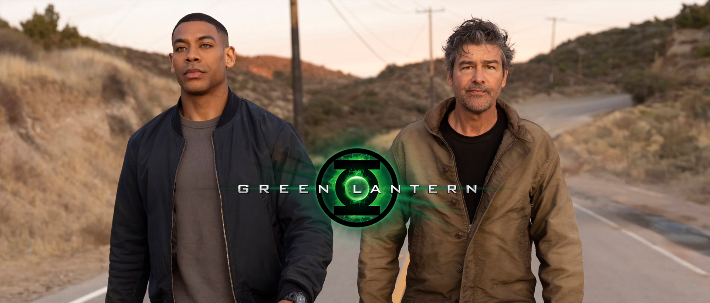
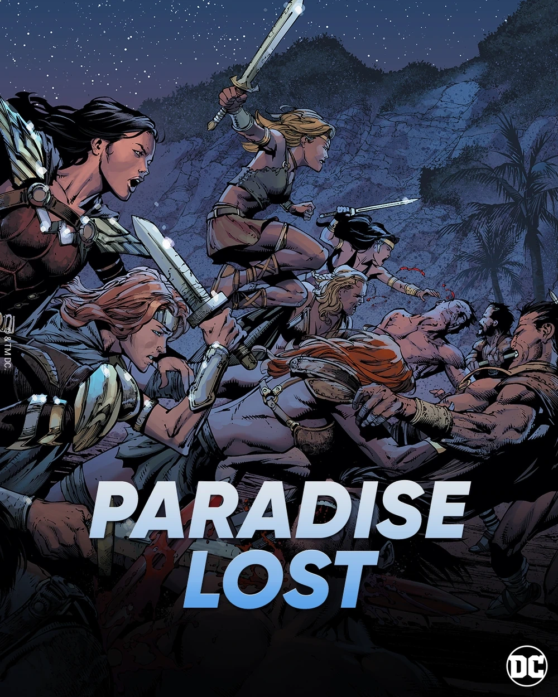

|
|

El futuro del universo DC
Próximas Películas
| Película |
Imagen |
Descripción |
Fecha Estreno |
Estado |
| Superman: Legacy |
 |
Nuevo inicio del DCU con David Corenswet como Superman
y Rachel Brosnahan como Lois Lane. Dirigida por James Gunn. |
11 Julio 2025 |
En producción |
| The Batman Part II |
 |
Secuela de The Batman con Robert Pattinson regresando
como el Caballero Oscuro. Dirigida por Matt Reeves. |
2 Octubre 2026 |
En desarrollo |
| The Authority |
 |
Adaptación del equipo de superhéroes que toma decisiones drásticas
para "arreglar" el mundo, sin importar el costo. |
2027 |
Anunciado |
| Supergirl: Woman of Tomorrow |
 |
Basada en el cómic de Tom King, presenta una versión más dura
de Supergirl influenciada por su traumático pasado. |
2027 |
Anunciado |
Próximas Series
| Serie |
Imagen |
Descripción |
Plataforma |
Estado |
| The Penguin |
 |
Spin-off de The Batman que sigue el ascenso de Oswald Cobblepot
en el bajo mundo criminal de Gotham City. |
HBO Max |
Post-producción |
| Waller |
 |
Spin-off de Peacemaker con Viola Davis regresando como Amanda Waller.
Co-escrita por James Gunn. |
HBO Max |
En desarrollo |
| Lanterns |
 |
Serie de Green Lantern que sigue a Hal Jordan y John Stewart
en una historia de tipo True Detective en el espacio. |
HBO Max |
En desarrollo |
| Paradise Lost |
 |
Serie prequel de Wonder Woman ambientada en Themyscira,
explorando la política de las Amazonas antes de Diana. |
HBO Max |
En desarrollo |
Proyectos de Animación
| Proyecto |
Descripción |
Plataforma |
Fecha |
| Creature Commandos |
Primer proyecto del nuevo DCU. Serie animada sobre un equipo
de monstruos que trabajan para Amanda Waller. |
HBO Max |
2024 |
| Batman: Caped Crusader |
Serie animada de Batman de Bruce Timm y J.J. Abrams
que regresa a las raíces del personaje. |
Amazon Prime |
2024 |
Videojuegos en Desarrollo
| Juego |
Descripción |
Plataformas |
Fecha |
| Suicide Squad: Kill the Justice League |
Juego de acción en primera persona del Escuadrón Suicida
contra la Liga de la Justicia brainwashed. |
PS5, Xbox, PC |
2024 |
| Wonder Woman |
Juego de acción y aventura de Wonder Woman
desarrollado por Monolith Productions. |
Por anunciar |
Por anunciar |
Fases del Nuevo DCU
Capítulo 1: Dioses y Monstruos (2024-2027)
• Superman: Legacy (Película)
• Creature Commandos (Serie animada)
• Waller (Serie)
• The Authority (Película)
• Lanterns (Serie)
• Paradise Lost (Serie)
• The Brave and the Bold (Película)
• Supergirl: Woman of Tomorrow (Película)
• Swamp Thing (Película)
|